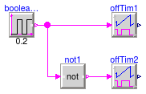

Collection of models that illustrate model use and test models
This package contains examples for the use of models that can be found in Buildings.Controls.Continuous.
Extends from Modelica.Icons.ExamplesPackage (Icon for packages containing runnable examples).
| Name | Description |
|---|---|
| Test model for PID controller with optional reverse action | |
| Example model for block that outputs the number of requests | |
| Example model for off timer | |
| Example model for PID controller with hysteresis | |
| Example model for PID controller with hysteresis and timer | |
| Example model for signal ranker |
 Buildings.Controls.Continuous.Examples.LimPID
Buildings.Controls.Continuous.Examples.LimPID
Test model for PID controller with optional reverse action

This model tests the implementation of the
PID controller with optional reverse action.
The model limPIDOri is the original
implementation of the controller from the Modelica
Standard Library. The models limPID
and limPIDRev are the implementations
from the Buildings library. The model
limPIDRev is parameterized to have
reverse action.
The assertion blocks test whether the results
of all three controllers are identical.
Extends from Modelica.Icons.Example (Icon for runnable examples).
Buildings.Controls.Continuous.Examples.NumberOfRequests
Example model for block that outputs the number of requests

Example that demonstrates the use of the block Buildings.Controls.Continuous.NumberOfRequests. The parameters of the block are such that the output is incremented for each input signal that is strictly larger than 0. The figure below shows the inputs and the output of the block.

Extends from Modelica.Icons.Example (Icon for runnable examples).
Buildings.Controls.Continuous.Examples.OffTimer
Example model for off timer

Example that demonstrates the use of the model
Buildings.Controls.Continuous.OffTimer.
The input to the two timers are alternating boolean values.
Whenever the input becomes false(=0), the timer is reset.
The figures below show the input and output of the blocks.


Extends from Modelica.Icons.Example (Icon for runnable examples).
Buildings.Controls.Continuous.Examples.PIDHysteresis
Example model for PID controller with hysteresis

Example that demonstrates the use of the PID controller
with hysteresis. The control objective is to keep
the temperature of the energy storage cap
at 40°C.
The controller con is parameterized to
switch on if the control error is bigger than
eon=1.
The output of the controller remains above ymin=0.3 until the control
error is smaller than eoff=-1, at which
time the controller outputs y=0 until the
control error is again bigger than 1.
The figure below shows the control error
con.feeBac.y and the control signal
con.y.

Extends from Modelica.Icons.Example (Icon for runnable examples).
Buildings.Controls.Continuous.Examples.PIDHysteresisTimer
Example model for PID controller with hysteresis and timer

Example that demonstrates the use of the PID controller
with hysteresis and off timer.
The example is identical to
Buildings.Controls.Continuous.Examples.PIDHysteresis,
except that the controller also has an off timer.
This timer keeps the control signal at y=0
for a period of minOffTime=1000 seconds.
This may be used to avoid short-cycling if the load is small
and the system has little heat capacity.
The figure below shows the control error
con.feeBac.y and the control signal
con.y.


Extends from Modelica.Icons.Example (Icon for runnable examples).
Buildings.Controls.Continuous.Examples.SignalRanker
Example model for signal ranker

Example that demonstrates the use of the signal ranker model.
The figure below shows the input and output signals of the block.
Note that
sigRan.y[1] ≥ sigRan.y[2] ≥ sigRan.y[3].


Extends from Modelica.Icons.Example (Icon for runnable examples).